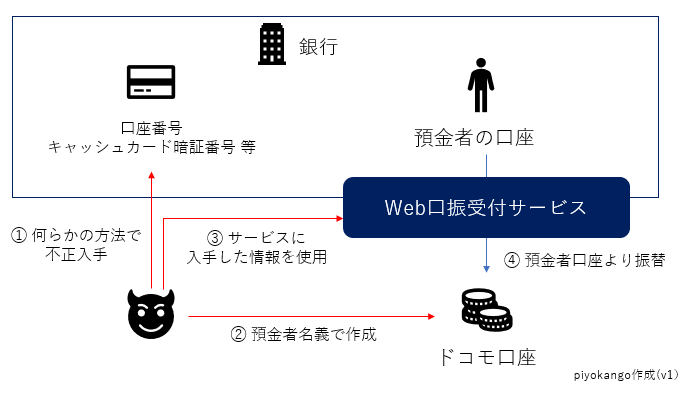

「Web 口振受付サービス」ってなんぞ？

さて，先週から各メディアは嬉々として「ドコモ口座」を叩いてるわけだが（まぁ「ドコモ口座」による「
まずはおさらいから。
piyokango さんによる「ドコモ口座を悪用した不正送金についてまとめてみた」を参照して，今回の「関係者」を挙げてみる。

ここで気になるのはやはり「Web 口振受付サービス」だろう。 某国営放送風テレビが「暗証番号を定期的に変える」とか頭の悪すぎることを言ったそうだし，「Web 口振受付サービス」が今回のセキュリティ最弱点であることは（たぶん）間違いないだろう。
じゃあ「Web 口振受付サービス」ってなんぞ？
ゴメンペコン。 ここからはかなり推測を含んでいる。 何故かというと，現時点で「Web 口振受付サービス」が使えるサービスを持ってないから。
というわけで，続きをどうぞ。
まず，今回正直（？）に申告したゆうちょ銀行を見てみる。 ゆうちょ銀行では「口座振替受付サービス」として以下の3つの手段を提供している。
- 収納機関のWebサイトからのお申込み（Web 受付方式）
- 収納機関のWebサイトからのお申込み（金融機関受付方式）
- ゆうちょ銀行のキャッシュカードでのお申込み（収納機関受付方式）
ただし，これら3つの手段を使うにはそれぞれ条件がある。 以下に表にしてみる。
| 申し込み方法 | サービス名 | 登録方法 | ゆうちょダイレクト |
|---|---|---|---|
| Web 受付方式 | Web 口振受付サービス | Web ブラウザ | 不要 |
| 金融機関受付方式 | Pay-easy | Web ブラウザ | 要 |
| 収納機関受付方式 | Pay-easy | 専用端末 | 不要 |
そういや，こっちに帰郷ったときに市役所で引き落とししてもらう銀行を登録する際に Pay-easy の専用端末らしきものを使ったわ（今メインで利用してる銀行は Pay-easy に対応してる）。
おそらく Web での登録であっても「ゆうちょダイレクト」のアカウントを持っていれば，そのアカウントの認証トークンを使って Pay-easy 経由で識別（identification）や認証（authentication）は可能なのだろう。
言い方を変えると，オンライン上で識別・認証するためのデジタル・トークンを持っていない場合は「Web 口振受付サービス」で暗証番号やらの危なっかしい情報を使わざるを得ない，ということだ。
これ結構マズいよねぇ。 個人的には「Web 口振受付サービス」を使う銀行さんはあまり利用したくない気分である。 既に口座があって公共料金の引き落とし等に使ってるならどうしようもないけど（マメに残高履歴をチェックするしかない）。
たとえばダイレクトバンキング等のアカウントを持っていて Web で Pay-easy が利用可能なら「Web 口振受付サービス」での登録を全て無効にするとかできないのだろうか。
まぁ，身元の曖昧なユーザを抱えるサービスに対して口座振替を設定するようなシチュエーションは今までなかったんだろう。 おそらく銀行ごとに「Web 口振受付サービス」で対応可能な収納機関がかなり絞り込まれると思う。 今後の動向に注目である。